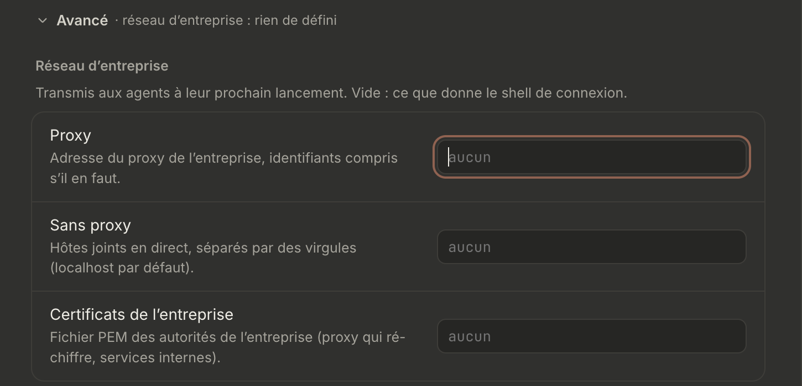
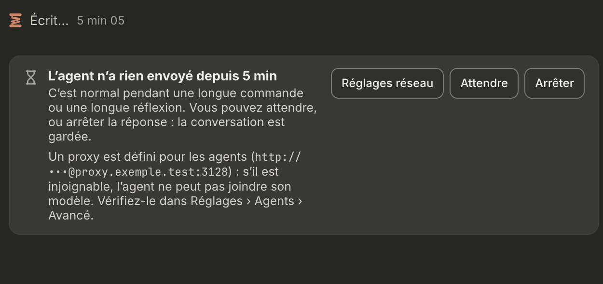
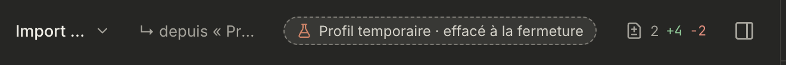
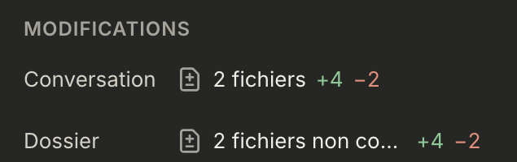
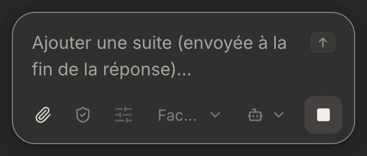
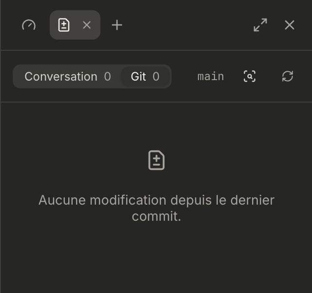

Seconde chasse rc.4 : ce qui change à l’écran
Passage réel du 2026-11-23 (profil temporaire, agent factice). Sept points changent l’affichage ; ils sont regroupés ici pour une seule validation. Pour chacun : la capture réelle « avant » (ou une reproduction quand la chasse n’en a pas pris, signalée), puis une ou deux variantes, la recommandée en premier. Rien n’est codé.
Chaque maquette est montrée en clair et en sombre ; la bascule de langue réécrit les textes des maquettes (fr/en). Cadres pointillés = nouveau. Textes proposés : tableau en fin de section, avec les clés.
T4 · Proxy changé, agent pas relancé constat
OpenCode lancé sans proxy ; le bandeau « n’arrive pas à joindre son modèle » propose «
Réglages réseau ». On y saisit un proxy (« Enregistré : pris en compte au prochain
lancement d’un agent »), on revient : le bandeau dit toujours « derrière un proxy
d’entreprise, renseignez-le dans Réglages › Agents › Avancé ». Le bandeau lit le proxy
avec lequel l’agent a été lancé (snapshot.proxy) : rien ne dit qu’il faut
relancer l’agent.

Reproduction du bandeau au retour dans la conversation (textes actuels) :
A. Le bandeau le dit, avec « Relancer l’agent » recommandé
Quand les réglages réseau des agents diffèrent de ceux avec lesquels l’agent de la conversation a été lancé (proxy, sans-proxy ou certificats), la piste réseau est remplacée par une ligne qui le dit, et « Réglages réseau » laisse sa place à « Relancer l’agent » (bouton principal). Même chose dans le bandeau de silence quand il cite le proxy.
- Pourquoi elle : la réponse arrive là où l’œil est déjà, au moment où l’on revient des Réglages ; un seul geste répare. Générique : tout agent, rien de propre à OpenCode.
-
Code : le main compare l’empreinte des réglages réseau au lancement de l’agent et
l’actuelle, et le dit dans l’état de l’agent (
networkStale) ; l’interface n’affiche qu’un drapeau. « Relancer l’agent » réutilise la relance existante (Réglages › Agents › page de l’agent, « Relancer »).
B. En plus, dans Réglages : relancer depuis l’endroit où l’on a changé le proxy
Après l’enregistrement, si des agents tournent avec l’ancien réglage, la ligne « Enregistré » le dit et propose de les relancer. Complète A (l’utilisateur qui ne revient pas tout de suite à la conversation), ne la remplace pas.
- Moins : relancer d’ici arrête des réponses en cours dans d’autres conversations, qu’on ne voit pas ; d’où « Relancer » par agent, jamais « tout relancer ».
| Clé (proposée) | Français | English |
|---|---|---|
agentRetry.networkStale |
Les réglages réseau ont changé depuis le lancement de {{agent}} : relancez-le pour les appliquer. La conversation est gardée. | Network settings changed since {{agent}} started: restart it to apply them. The conversation is kept. |
agentRetry.restart, silenceBanner.restart |
Relancer l’agent | Restart the agent |
settings.network.stale |
Enregistré. {{agent}} tourne encore avec l’ancien réglage. | Saved. {{agent}} is still running with the old setting. |
T5 · Bandeau de silence très haut, adresse coupée constat
Trois boutons sur la même ligne que le texte (.silence-banner-actions,
flex-shrink: 0) laissent à la colonne de texte ≈ 260 px : huit lignes de
texte pour une colonne de 570 px. L’adresse du proxy est en
overflow-wrap: anywhere : coupée en « http:// » / « •••@proxy… ».

A. Boutons sous le texte, adresse insécable recommandé
Le texte prend toute la largeur ; les boutons passent dessous, alignés sur le texte (pas sur l’icône). L’adresse ne se coupe plus : une seule pièce, « … » si elle ne tient pas, entière en infobulle (identifiants toujours masqués par le main). Même mise en page pour le bandeau « n’arrive pas à joindre son modèle », qui partage les styles.
Même bandeau dans une conversation étroite (≈ 400 px) :
- Pourquoi elle : 5 lignes au lieu de 8 à 1280 px, et la hauteur ne dépend plus du nombre de boutons ; à toute largeur et dans les deux langues, rien ne se chevauche. Ordre des boutons inchangé, le plus prudent (Arrêter) en dernier.
-
Code : CSS seul (
silence-banner.css: grille icône + texte, actions en ligne 2 ;codede la piste ennowrap+ ellipse) et untitlesur l’adresse.
B. Deux boutons à droite, « Réglages réseau » en lien dans le texte
On garde les boutons à droite mais un de moins : la piste se termine par un lien « Réglages réseau ». Plus compact en large ; en étroit, on retombe sur le défaut actuel.
- Moins : un lien dans un texte de bandeau est nouveau dans l’app ; « Attendre » et « Arrêter » mangent encore ≈ 190 px de la colonne de texte.
T13 · « Écrit… » au-dessus de « rien envoyé depuis 5 min » constat
L’indicateur garde la dernière activité connue (« Écrit… », bobine animée) et la durée de l’étape ; le bandeau dit juste dessous que l’agent n’a rien envoyé depuis 5 min. Les deux sont vrais, mais lus ensemble ils se contredisent. Le cas « injoignable » n’a pas ce défaut : son bandeau remplace déjà l’indicateur (fiche 275).
A. Pendant le bandeau, l’indicateur ne dit plus de verbe recommandé
Tant que le bandeau de silence est là (et après « Attendre », jusqu’à ce que l’agent reparle), l’indicateur dit « Réponse en cours » avec la durée du tour, et sa bobine s’arrête de tourner. Dès que l’agent renvoie quelque chose, le verbe revient.
- Pourquoi elle : l’indicateur reste (on voit que le tour n’est pas fini et depuis combien de temps), mais il n’affirme plus une activité que le bandeau dément.
- Injoignable : inchangé (le bandeau orange remplace l’indicateur), montré pour mémoire.
B. Pendant le bandeau, pas d’indicateur du tout
Le bandeau seul, comme pour « injoignable ».
- Moins : on perd la durée du tour, et après « Attendre » (bandeau masqué) il faut faire revenir l’indicateur : deux états de plus à tester.
| Clé (proposée) | Français | English |
|---|---|---|
activity.silent |
Réponse en cours | Response in progress |
T10 · Textes tronqués constat
En-tête d’une fille : « Import … » et « ↳ depuis « Pr… » » alors que le titre complet
tient en 10 lettres, parce que la pastille « Profil temporaire · effacé à la fermeture »
ne rétrécit jamais (.temporary-chip { flex-shrink: 0 }). Panneau Session : «
2 fichiers non co… ». Saisie à 560 px : le modèle réduit à « Fac… ».



A. Ce qui cède en premier recommandé
Un ordre unique : ce qui ne fait que rappeler un état cède avant ce qui nomme la conversation. En-tête : (1) la pastille du profil temporaire devient son icône (fiole, texte en infobulle et pour les lecteurs d’écran) ; (2) « depuis « … » » se coupe ; (3) le titre en dernier. Panneau : la valeur passe sur deux lignes plutôt que d’être coupée. Saisie : « Options » (curseurs) rejoint le menu 📎 avant que le modèle ne soit coupé.
En-tête d’une fille, même largeur que la capture (≈ 600 px) :
Panneau Session (≈ 300 px)
Saisie, fenêtre à 560 px (≈ 312 px)
- Pourquoi elle : le titre est la seule information qu’on ne retrouve nulle part ailleurs ; la pastille du profil temporaire est un rappel (déjà vu au lancement), son icône suffit à le garder présent.
-
En-tête : seuil par requête de conteneur (pastille en icône quand l’en-tête fait moins
de ≈ 760 px) ; « depuis » en
flex-shrinkavant le titre. Le titre garde au moins ≈ 16 caractères avant toute coupe. -
Saisie : un niveau de repli de plus dans
useBarFold(fiche 092) : les options passent dans le menu 📎, comme la capture d’écran aujourd’hui. Le modèle s’affiche alors en entier à 560 px.
B. La pastille quitte l’en-tête
Le rappel du profil temporaire descend sous l’agent, en bas de la barre latérale ; l’en-tête ne garde que ce qui concerne la conversation.
- Moins : la pastille sort du champ de vision (barre latérale repliée : plus visible du tout) ; c’est justement un avertissement (« effacé à la fermeture »).
| Clé | Français | English |
|---|---|---|
settings.data.fresh.chip (inchangée, en infobulle quand icône) |
Profil temporaire · effacé à la fermeture | Temporary profile · erased when closed |
composer.attachMenu.options (nouvelle) |
Options de l’agent… | Agent options… |
T8 · Clic droit sur une conversation constat
Clic droit sur une ligne de la barre latérale : le mot sous le pointeur est sélectionné et le menu natif « Copier » s’ouvre. Le menu de la conversation n’existe qu’au bouton ⋯ (survol).
Pas de capture dans la chasse : reproduction.A. Clic droit = le menu ⋯, au pointeur recommandé
Même menu, mêmes éléments, même ordre que ⋯ (ConversationMenuItems), ouvert à
la position du pointeur ; la ligne prend l’état « survolée » le temps du menu. Pas de
sélection de texte dans les lignes (user-select: none), ni au clic droit ni
au double-clic. Vaut pour les filles et l’espace Discussion (avec leurs éléments propres :
« Continuer dans un projet… », pas de « Lancer en parallèle… »).
- Pourquoi elle : c’est ce que fait macOS (Finder, Mail) et Claude Desktop ; le menu existe déjà, il suffit de l’ouvrir d’un autre geste.
-
Code : Radix fournit
ContextMenuavec les mêmes éléments queDropdownMenu; les éléments sont partagés, rien de neuf côté textes.
T12 · « Nouvelle tâche » sans dossier constat
Tâches planifiées › Nouvelle tâche : « Dossier : Aucun dossier choisi » ; « Choisir… » ouvre la fenêtre de macOS, même pour le projet sur lequel on travaille. Le dossier n’est prérempli que par l’astuce « Planifier… » (fiche 191).
Pas de capture dans la chasse : reproduction (textes deTaskForm.tsx).
A. Projet courant prérempli, « Changer… » ouvre les projets récents recommandé
Prérempli avec le dossier de la conversation ouverte (espace Code), sinon le plus récent des « Dossiers récents » (ceux de Réglages › Données). « Changer… » ouvre un menu : les projets récents (nom en clair, chemin en gris), puis « Autre dossier… » qui ouvre la fenêtre de macOS.
- Pourquoi elle : le cas courant (planifier sur le projet en cours) ne demande plus aucun clic ; les autres projets sont à un clic, sans la fenêtre de macOS.
- Rien n’est enregistré sans « Enregistrer » ; le dossier prérempli se voit en entier. Si aucun dossier récent : comportement actuel.
B. Projet courant prérempli, récents en pastilles sous le champ
- Plus : tout est visible d’un coup. Moins : trois pastilles de plus dans un formulaire déjà long, et des noms de projets qui se ressemblent sans leur chemin.
| Clé (proposée) | Français | English |
|---|---|---|
scheduled.form.changeFolder |
Changer… | Change… |
scheduled.form.recent |
Dossiers récents | Recent folders |
scheduled.form.otherFolder |
Autre dossier… | Other folder… |
scheduled.form.current |
conversation ouverte | open conversation |
T14 · Marge du terminal, vocabulaire git dans Discussion constat
Terminal intégré
Le texte du terminal touche le bord gauche arrondi du panneau. Cotes actuelles :
.terminal-host 6 / 4 / 4 / 10 px, xterm posé en absolu dedans ; la chasse
voit pourtant le texte au bord (à mesurer dans l’app avant de corriger : xterm peut
déborder de .terminal-instance).
- Recommandé : 12 px de marge à gauche et à droite, 8 px en haut et en bas, mesurés sur le texte rendu (essai e2e : boîte de la première ligne à ≥ 12 px du bord du panneau).
Panneau Modifications dans l’espace Discussion recommandé
Dans une discussion, le panneau ouvre la vue « Git » et dit « Aucune modification depuis le dernier commit. » : du vocabulaire git hors d’un projet (le glossaire dit « documents », jamais « dossier » ni « fichiers », dans l’espace Discussion).

- Recommandé : dans une discussion, pas de bascule « Conversation / Git » (une seule vue), et le texte vide parle de documents. Quand l’agent en a modifié : la liste habituelle, sans « depuis le dernier commit ».
- Variante minimale (si la bascule doit rester) : seul le texte change.
| Clé (proposée) | Français | English |
|---|---|---|
changes.empty.discussion |
L’agent n’a encore modifié aucun document de cette discussion. | The agent hasn’t changed any document in this chat yet. |
Questions
- T4 : A seule, ou A + B ? (Recommandé : A ; B si l’on veut couvrir le retour différé.)
- T4 : après « Relancer l’agent » pendant une réponse, renvoyer d’office le dernier message (l’agent n’a rien reçu de lui) ou le laisser dans la saisie ? Recommandé : le remettre dans la saisie, sans l’envoyer.
- T5 : A pour les deux bandeaux (silence et injoignable) ?
- T13 : « Réponse en cours » vous va, ou préférez-vous « Sans nouvelles · 5 min 05 » ?
- T10 : le seuil de la pastille en icône (≈ 760 px d’en-tête) ; et B écarté ?
- T12 : A (menu) ou B (pastilles) ?